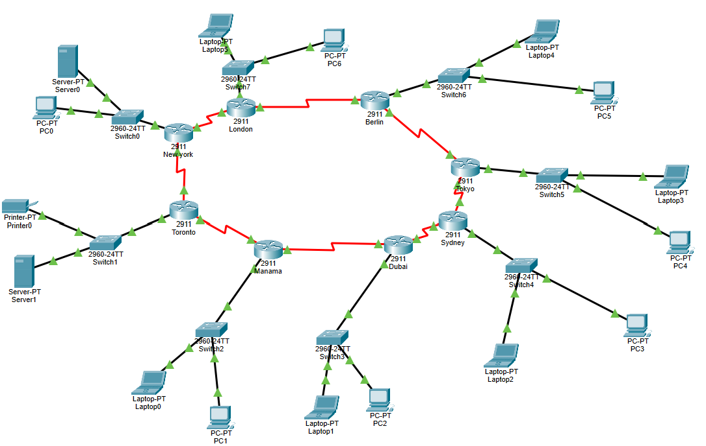
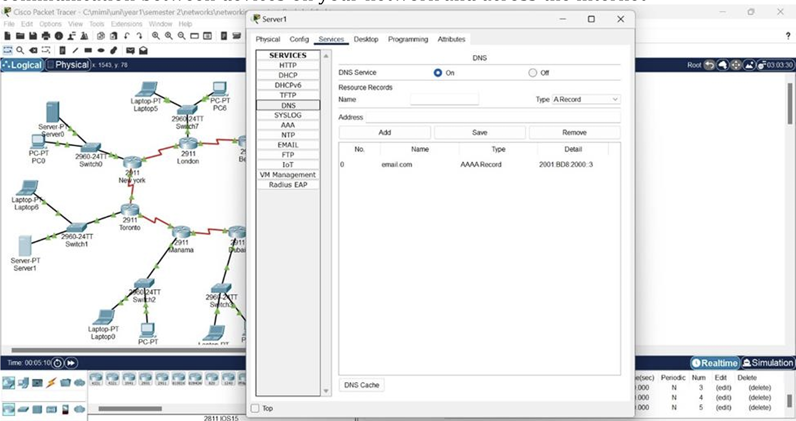
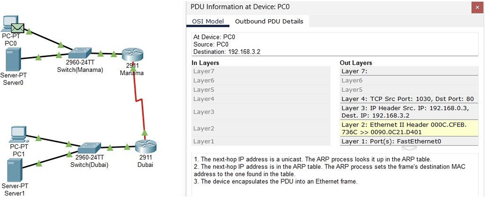
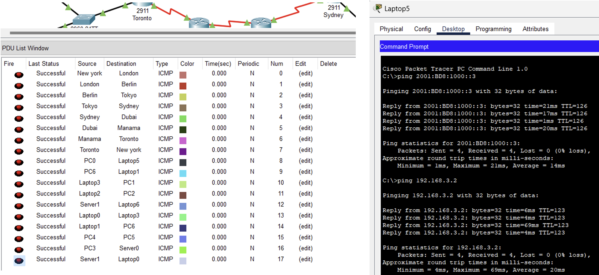

What the project set out to do
Build an enterprise backbone that scales cleanly across regions on both IPv4 and IPv6 at once, with real application services running on top — not just a routing exercise.
What I actually built
I designed and implemented the dual-stack topology spanning eight international corporate hubs. I built a VLSM strategy on a 192.168.0.0/21 base network alongside a hierarchical /52 IPv6 allocation, deployed OSPF for both protocols for fast convergence and redundancy, configured application-layer services (DHCP, SMTP, secure FTP), and validated multi-hop PDU encapsulation using Packet Tracer's simulation engine.
Documentation on file
Logical topology diagrams across 8 sectors, IPv4/IPv6 address scheme matrices, OSI-layer PDU breakdowns, DNS records, and real-time CLI connectivity verification.

8-site logical topology
DHCP
PDU breakdown
CLI connectivity check